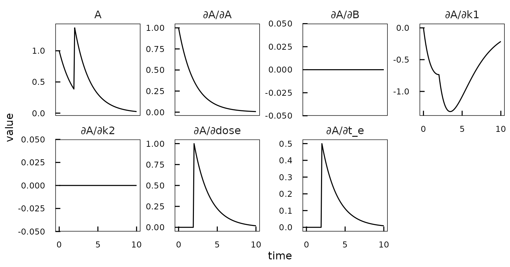

cvode() offers
SUNDIALS CVODES [1], [2], the long-established
implementation of BDF and Adams methods with forward and adjoint
sensitivities, next to the integrators of cppODE(). It
generates the model from the same equations and links it against CVODES;
the result is solved by solveODE(),
solveODEBatch() and prepareBatch() as a model
from cppODE(). Forward sensitivities come from the CVODES
sensitivity solver, reverse mode from the CVODES adjoint, a continuous
adjoint.
Availability of SUNDIALS
codegenAvailable("cvode") reports whether the SUNDIALS
libraries were found when cppDE was installed.
codegenAvailable("cvode")
#> [1] TRUEWithout SUNDIALS (\(\ge 6.0\)) from
the system, installLibs()
downloads and builds SUNDIALS and SuiteSparse into a per-user cache;
installLibs("suitesparse") builds only KLU, the sparse
linear solver of sparse = TRUE in cppODE() and
cvode(). cppDE records the library paths at install time,
so it is installed again afterwards (Installation).
installLibs("sundials") # SUNDIALS and SuiteSparse
remotes::install_github("dModverse/cppDE") # links the new librariesModel definition
The arguments events, rootfunc,
fixed, forcings, sparse,
includeTimeZero, stepTrace,
compile, modelname, outdir and
verbose are those of cppODE().
method is "bdf" (default) or
"adams". Sensitivities are off by default:
deriv = TRUE selects first-order forward sensitivities,
derivMode = "reverse" the CVODES adjoint with a checkpoint
every asaCheckpoints steps. There are no second-order
sensitivities.
The native models for comparison:
eqns <- c(A = "-k1*A", B = "k1*A - k2*B")
parms <- c(A = 1, B = 0, k1 = 0.5, k2 = 0.2)
times <- seq(0, 10, by = 0.1)
events <- data.frame(var = "A", time = "t_e", value = "dose", method = "add")
chain <- cppODE(eqns, modelname = "g8_chain", compile = FALSE)
dosed <- cppODE(eqns, events = events, modelname = "g8_dosed", compile = FALSE)
chainR <- cppODE(eqns, derivMode = "reverse", modelname = "g8_chainR", compile = FALSE)
compile(chain, dosed, chainR, output = "guide8", cores = 2)The same models on CVODES, compiled into a shared object of their own:
plainC <- cvode(eqns, modelname = "g8_plainC", compile = FALSE)
chainC <- cvode(eqns, deriv = TRUE, modelname = "g8_chainC", compile = FALSE)
dosedC <- cvode(eqns, events = events, deriv = TRUE, modelname = "g8_dosedC", compile = FALSE)
adjC <- cvode(eqns, derivMode = "reverse", asaCheckpoints = 100, modelname = "g8_adjC",
compile = FALSE)
compile(plainC, chainC, dosedC, adjC, output = "guide8cvode", cores = 2)
attr(chainC, "backend")
#> [1] "cvode"Comparison with cppODE()
cppODE() |
cvode() |
|
|---|---|---|
method |
"bdf", "adams",
"rb4", "tsit5"
|
"bdf", "adams"
|
| sensitivities | on by default; first and second order |
deriv = TRUE; first order |
| reverse mode | discrete adjoint of the computed steps | continuous adjoint (CVODES) |
| reverse options |
keepStore, store,
adjointControl()
|
asaCheckpoints,
adjointControl(gradtol = )
|
sensErrCon |
TRUE or FALSE
|
TRUE |
| libraries | LAPACK; KLU optional | SUNDIALS; KLU optional |
At tight tolerances the two backends agree in states and sensitivities to the tolerance, with different step sequences.
solveODE(plainC, times, parms)$variable[101, ]
#> A B
#> 0.006738371 0.214328186
outC <- solveODE(chainC, times, parms, abstol = 1e-10, reltol = 1e-10)
outN <- solveODE(chain, times, parms, abstol = 1e-10, reltol = 1e-10)
c(states = max(abs(outC$variable - outN$variable)),
sensitivities = max(abs(outC$tangent - outN$tangent)))
#> states sensitivities
#> 1.321288e-10 8.817438e-10
sapply(list(cvode = outC, cppODE = outN),
function(o) unlist(o$diagnostics[c("accepted", "rejected", "fevals", "jevals")]))
#> cvode cppODE
#> accepted 270 264
#> rejected 0 4
#> fevals 1706 291
#> jevals 5 5Events
Events, switches and forcings behave as in cppODE(); the
sensitivities jump with the states, also in the dose and in the event
time.
pe <- c(parms, t_e = 2, dose = 1)
outE <- solveODE(dosedC, times, pe, abstol = 1e-10, reltol = 1e-10)
rbind(cvode = outE$tangent[101, "B", ],
cppODE = solveODE(dosed, times, pe, abstol = 1e-10, reltol = 1e-10)$tangent[101, "B", ])
#> A B k1 k2 dose t_e
#> cvode 0.2143289 0.1353353 -0.3372217 -3.213218 0.3059681 0.05203581
#> cppODE 0.2143289 0.1353353 -0.3372217 -3.213218 0.3059681 0.05203581
ggplot(longFormat(outE, "A"), aes(time, value)) +
geom_line() +
facet_wrap(~panel, scales = "free_y", ncol = 4) +
scale_x_continuous(n.breaks = 3)
Adjoint sensitivities
derivMode = "reverse" integrates the adjoint equations
backward, one backward solve per cotangent column, and interpolates the
forward state between checkpoints. The result is the derivative of the
exact solution up to the tolerance; the reverse mode of
cppODE() is the exact derivative of the computed solution
(continuous and discrete adjoint).
adjointControl(gradtol = ) sets the tolerance of the
quadrature of the gradient.
w <- matrix(0, length(times), 2, dimnames = list(NULL, c("A", "B")))
w[101, "B"] <- 1
cbind(cvode = solveODE(adjC, times, parms, cotangent = w, abstol = 1e-10, reltol = 1e-10,
adjoint = adjointControl(gradtol = 1e-10))$cotangent[, 1],
cppODE = solveODE(chainR, times, parms, cotangent = w, abstol = 1e-10,
reltol = 1e-10)$cotangent[, 1],
forward = outN$tangent[101, "B", ])
#> cvode cppODE forward
#> A 0.2143289 0.2143289 0.2143289
#> B 0.1353353 0.1353353 0.1353353
#> k1 -0.1734727 -0.1734727 -0.1734727
#> k2 -1.5411584 -1.5411584 -1.5411584Batches of conditions
A cvode() model has the batch entry of 6. Batches of conditions.
conditions <- list(low = list(parms = c(A = 1, B = 0, k1 = 0.5, k2 = 0.2)),
high = list(parms = c(A = 2, B = 0, k1 = 0.5, k2 = 0.2)))
batch <- solveODEBatch(chainC, conditions, times = times, cores = 2)
sapply(batch, function(r) r$tangent[101, "B", ])
#> low high
#> A 0.2143285 0.2143287
#> B 0.1353353 0.1353353
#> k1 -0.1734733 -0.3469461
#> k2 -1.5411591 -3.0823176